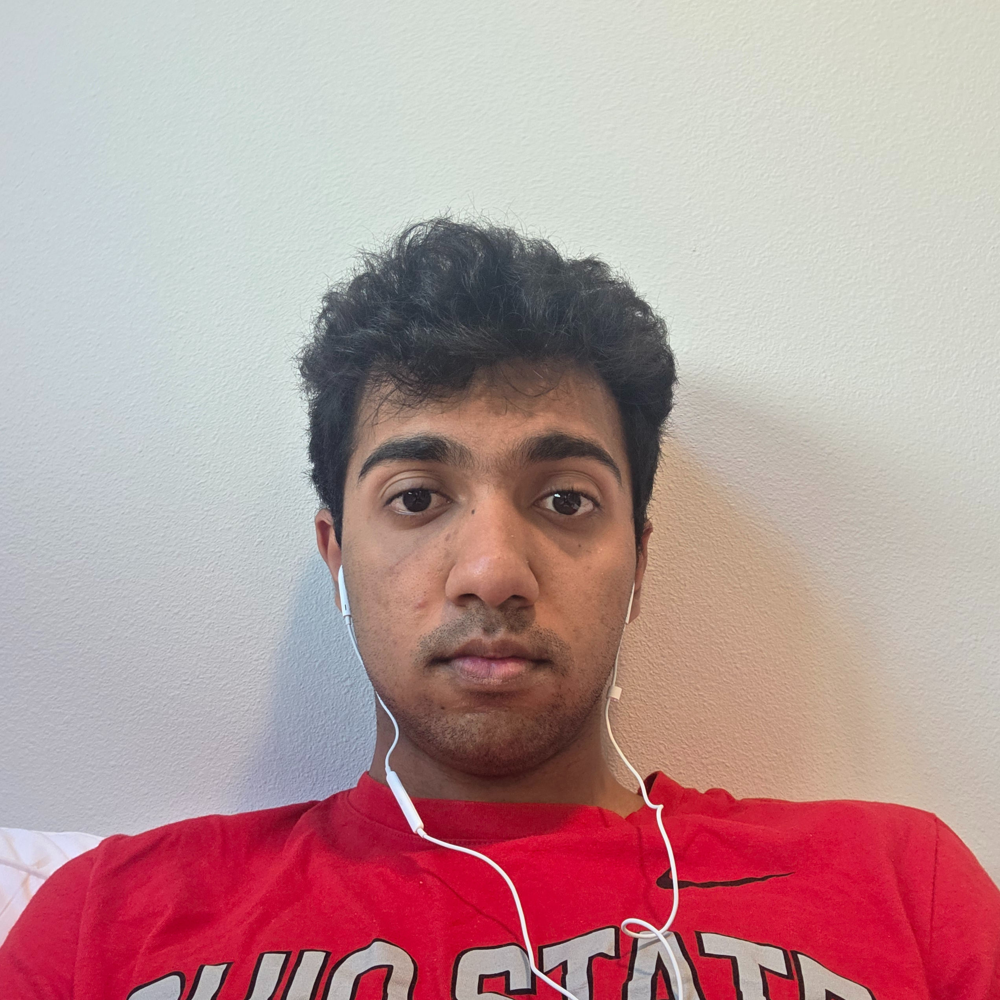
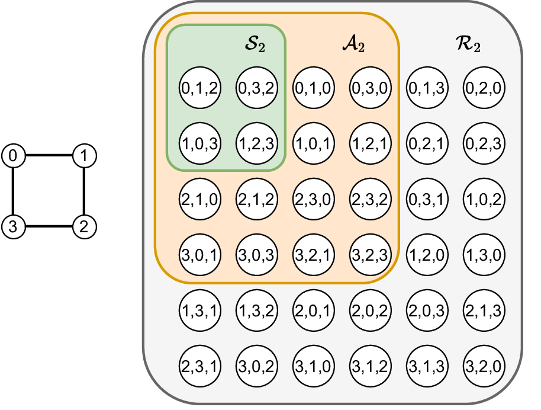
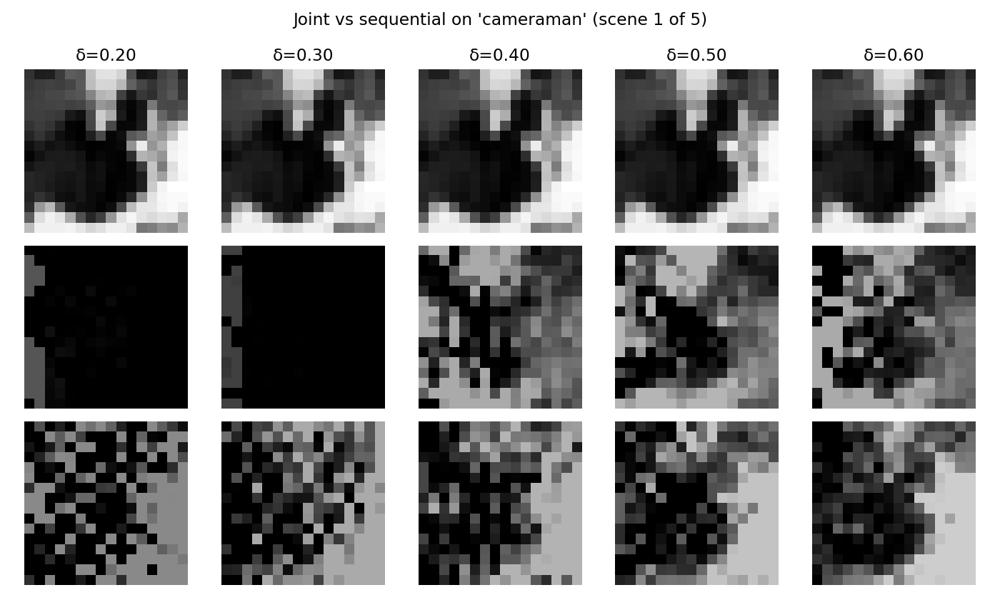

Farhan Sadeek
I'm an undergraduate at Columbia University studying Computer Science with minors in Physics, Mathematics, and Electrical Engineering in the Fu Foundation School of Engineering and Applied Science. I spent a year at Dartmouth College, where I was advised by Peter Chin and Rahul Sarpeshkar, and the last two years of high school at The Ohio State University as a dual-enrolled student.
I'm broadly interested in machine learning, distributed algorithms, signal processing, random matrix theory, and higher dimensional geometry.
Email / Google Scholar / GitHub / LinkedIn / OpenReview

Research
My research interests span machine learning, distributed algorithms, signal processing, random matrix theory, and higher dimensional geometry.
|
 |
Learnable Path-Complex Features and Unified Path–Cellular Message Passing for Link Prediction
Farhan Sadeek, Sie Hendrata Dharmawan, and Peter Chin Published, May 22, 2026 project page / paper We introduce position-aware learnable initialization for path-complex cells and a unified path–cellular complex for link prediction, combining path- and ring-based message passing. |
|
 |
Simultaneous Illumination Normalization and Sparse Image Compression via Unfolded Recovery
Farhan Sadeek Published, May 24, 2026 project page / paper The joint inverse-problem pipeline combines illumination normalization and sparse image compression, outperforming sequential recovery by up to 4.7 dB on textured scenes. |